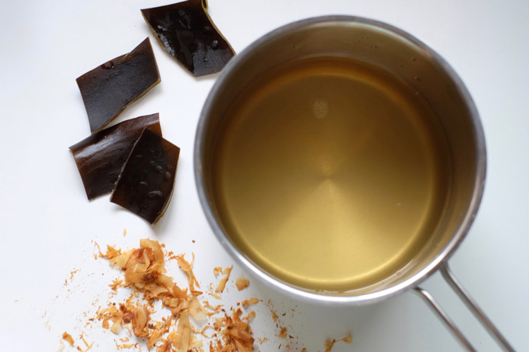

Dashi

Description
Dashi is a japanese stock used for many japanese dishes. We will describe
the recipe for konbudashi which uses dried kelp and bonito flakes. The stock will
have a great umami flavor!
Ingredients
- 1 ounce dashi kombu (dried kelp)
- 1 quart water
- 1/2 cup bonito flakes
Steps
- Place the kombu and water in a saucepan, allow it to soak for 30 minutes
- Remove the kombu from the water, cut lenghtwise slits. Return the kombu
to the water and bring to a boil. When it boils, remove the kombu to prevent
the stock from becoming bitter
- Stir the bonito flakes into the water, bring back to a boil. Once it does, take the pan
off the heat. Allow water to cool. Strain the dashi and you are done!